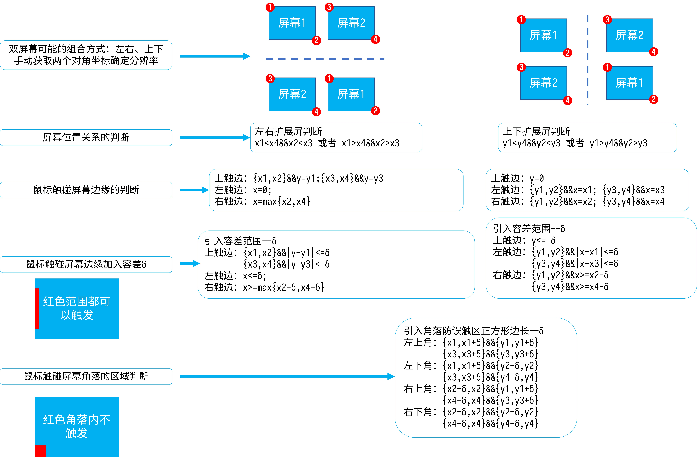
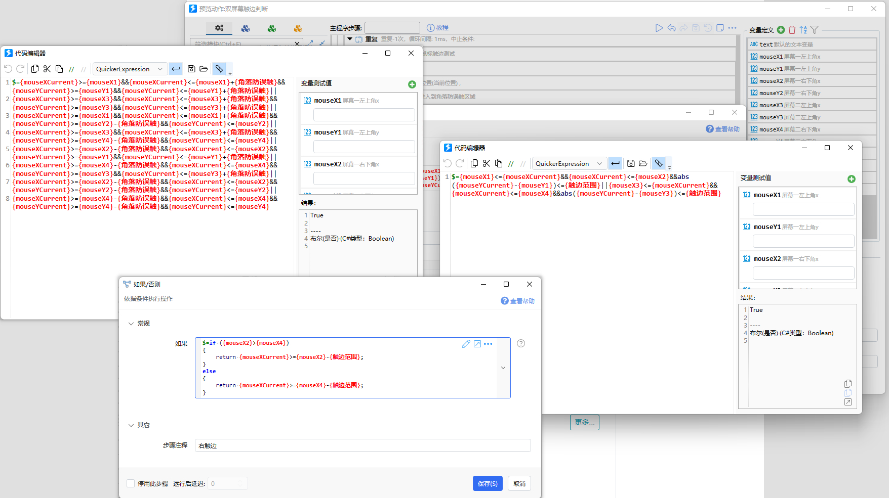

鼠标触碰屏幕边缘判断逻辑——双屏幕
quicker调用沙拉查词进行全局翻译的动作，其中鼠标触碰屏幕边缘启动翻译的方式并没有针对多屏的情况进行适配。这主要是因为Quicker只能直接获取主屏的分辨率，而扩展屏的分辨率和组合方式都无法直接获取。
Windows有无提供接口暂不了解（😶🌫️懒），考虑到大多数情况下为双屏幕，在这里就用笨方法来暴力枚举双屏幕的情况吧😅。双屏幕的可能的组合方式和鼠标是否触边的判断逻辑如下图

输入：两个屏幕的左上角和右下角坐标值。功能上只需要指引用户把鼠标放在对应的角落。
输出：
屏幕排列方式判断
鼠标位置是否在屏幕边缘的判断。
测试的quicker动作链接：双屏幕触边判断
Quicker 支持多种编程语言混用，写起来还是挺方便的。实在懒的时候拉拉模块，填填参数也没有任何问题😂。
